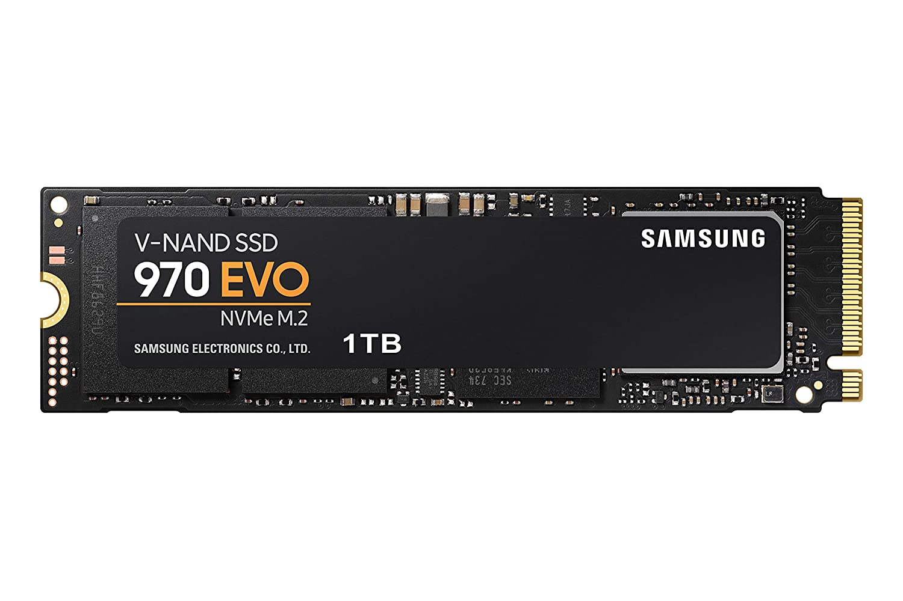

SSd and HDD

HDD

HDD or Hard Disk Drive is simply where you save images, videos and programs. You have heard people saying that ‘my pc has 125GB space’ so their pc has a 125GB hard disk drive. The hard
disk drive is also connected to the motherboard
SSD

SSD or Solid State Drive is the miniature version of HDD. It’s usually in the phones, tabs and laptops. This attached to the motherboard through screws.